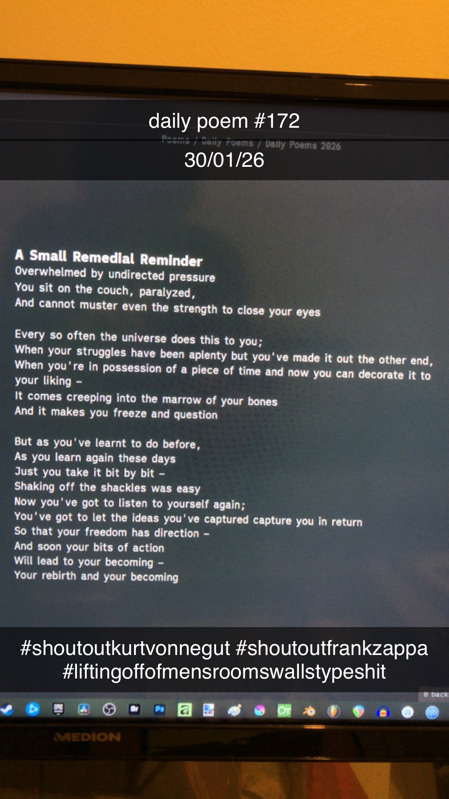

A Small Remedial Reminder
[172]Overwhelmed by undirected pressure
You sit on the couch, paralyzed,
And cannot muster even the strength to close your eyes
Every so often the universe does this to you;
When your struggles have been aplenty but you've made it out the other end,
When you're in possession of a piece of time and now you can decorate it to your liking –
It comes creeping into the marrow of your bones
And it makes you freeze and question
But as you've learnt to do before,
As you learn again these days
Just you take it bit by bit –
Shaking off the shackles was easy
Now you've got to listen to yourself again;
You've got to let the ideas you've captured capture you in return
So that your freedom has direction –
And soon your bits of action
Will lead to your becoming –
Your rebirth and your becoming
